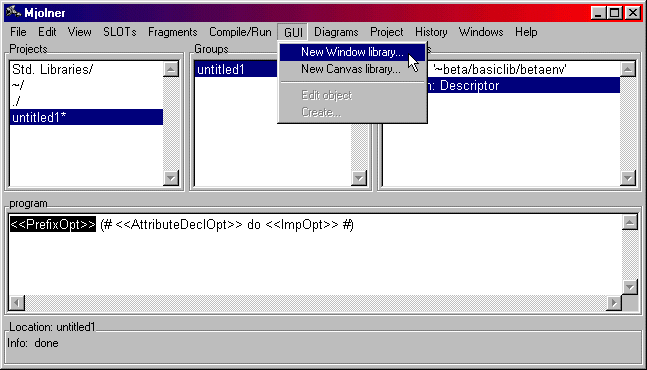
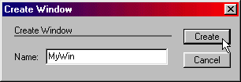

Frigg is fully integrated with the sourcebrowser
and structure editor. When Frigg is started, the
sourcebrowser window is presented to the user. The 'Interfacebuilder' menu
contains commands to create windows that can be edited in a graphical editor.

Interfacebuilder Menu
New Window Library
This command creates a new fragmentgroup that
are setup to contain window definitions. The ORIGIN of the fragmentgroup
are the 'guienvall' fragmentgroup, which includes all of GUIenv (Lidskjalv),
the Mjølner BETA user interface framework. The fragmentgroup has
a 'GUIenvLib: attributes' fragment, which therefore can contain specializations
of the window pattern from Lidskjalv. Furthermore a BODY fragmentgroup
is automatically created. This fragmentgroup will contain the private attributes
of the window definitions.
A file dialog prompts for a filename which will be the name of the new
fragment group.
Assuming the name 'foo' is used, the BODY group will have the name 'foobody'.
New Canvas Library
This command does almost the same as the 'New Window Library' command.
The created fragmentgroup will have a 'windowLib: attributes' fragment,
which can contain canvas specialisations of the window pattern from Lidskjalv.
Edit object
Selecting "edit" will open a graphical editor on the window pattern that
are currently selected in the structure-editor. The whole pattern definition
must be selected. It is not sufficient to just select the name.
Note: If the fragmentgroup is not checked, it
is not always possible for Frigg to recognize the selected pattern as a
user interface object. If the 'Edit' command is disabled, the fragmentgroup
should be checked via the 'Check' command in the 'Tools' menu.
Create
A specialization of window or canvas is generated
in the currently selected lib fragment, dependent of the name of the fragment.
If the current fragment is a GUIenvLib fragment, a window will be generated.
If it is a windowLib fragment, a canvas will be generated. The following
dialog are popped up:

In the 'name' field the name of the new window
(or canvas) should be typed in. The name are expected to be a proper BETA
identifier, since this is the name the pattern will given in the source
code.
A graphical editor is opened on the newly created
object.